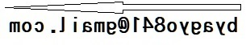

grurqApps
grurqのソフトウェアを解説するサイトです。
ソフトウェア
Windows 10(64bit)のみで動作確認しています。
日本語でのサポートのみ受け付けています。
Sorry,grurq works are supported by japanese language only.
必ずソフト紹介ページをお読みになった上でご利用ください。
ダウンロード・更新履歴確認方法
各ソフトの「github」から、 ↓Code▽ のボタンをクリックし、次に Download ZIP をクリックしてください。
解凍したzipファイルのうち \bin\Release フォルダ内にアプリケーションファイルが入っています。
更新履歴はcommitsを参照してください。
下記のソフトはexe.zipファイルをダウンロードして利用してください。
- CARD-JONG new!
- C言語とDXライブラリを使った、二人打ちの簡易麻雀ゲームです。
下記のソフトは、\distの中にアプリケーションファイルが入っています。
- deskrecorder
- pythonで作られた、簡易予約録音ソフトです。.wav形式で、事前に予約した時間からデスクトップ上の音声を録音できます。他のソフトウェアと同梱することで、GUI操作や.mp3形式への変換ができます。
更新履歴（2020-12-27～）
- 2021-04-12
- 2021-04-04
- 2020-12-27
- サイト改装。「更新履歴と既知の問題」のページを削除、ソフト紹介ページに移行しました。 今後はcommits（旧リポジトリ）を御覧ください。また、配布元は今後、githubとさせていただきます。
- ソフト紹介にあるMITライセンス邦訳のリンクを修正しました。
連絡先
grurqのgithub
